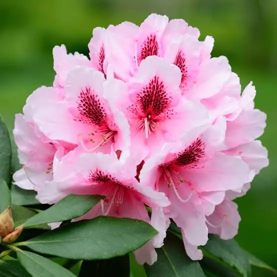

Washington's Flower: A Guide to the Pacific Rhododendron
- Name of the plant: Rhododendron macrophyllum, commonly known as the Pacific Rhododendron.
- Common alternate names: California rosebay, California rhododendron, coast rhododendron, big leaf rhododendron, and sometimes affectionately called “rhodies”.
- Physical size: The plant is a shrub that can grow between 6 to 26 feet (1.8 to 8 meters) tall and 5 to 10 feet wide. In shaded forests, it can become more tree-like, reaching up to 25 feet, while in more open areas, it tends to be shorter and more compact.
- Geography: The Pacific Rhododendron is native to the Pacific Coast of North America. Its range extends from southwestern British Columbia, Canada, down through Washington and Oregon, and into northern California (as far south as Monterey Bay). It is commonly found west of the Cascade Mountains.
- Climate: It thrives in moist to dry woodland and forest edge climates, from sea level up to about 4,500 feet in elevation. It prefers areas with partial to full shade and grows well in acidic, well-drained soils.
Additional Information
- State Flower Status: The Pacific Rhododendron is the official state flower of Washington. It was selected in 1892 by Washington women to be the state's floral representative at the 1893 World's Fair in Chicago and was officially adopted by the state legislature in 1959
- Appearance and Blooms: It is known for its large, leathery, dark green evergreen leaves. Between May and July, it produces spectacular, large, bell-shaped flowers that grow in clusters called trusses. The flower color is typically a vibrant pink or rose-purple, though white variations exist.
- Habitat and Ecology: This plant is a classic understory shrub in the coniferous forests of the Pacific Northwest. It commonly grows alongside trees like Douglas fir and Western hemlock and other understory plants such as Salal and Oregon Grape. Its dense foliage provides excellent year-round shelter for birds and other small wildlife.
- Toxicity Warning: Caution! All parts of the Pacific Rhododendron are toxic if ingested. The leaves and flowers contain grayanotoxins, which can be harmful to both humans and animals, including pets and livestock. Even honey made from the nectar of its flowers (sometimes called "mad honey") can be poisonous and cause symptoms like nausea, vomiting, and cardiac issues.